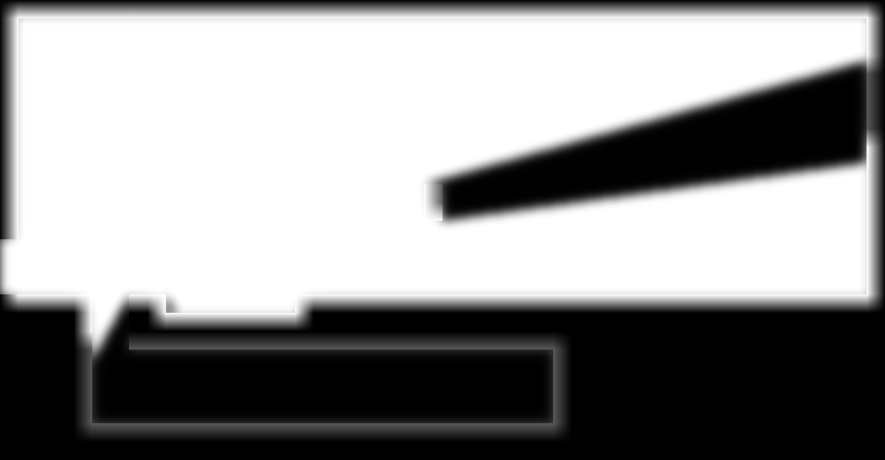
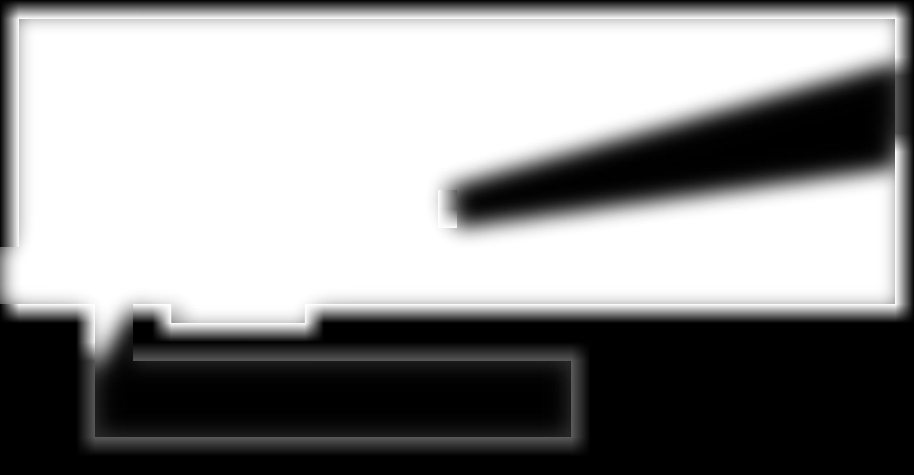
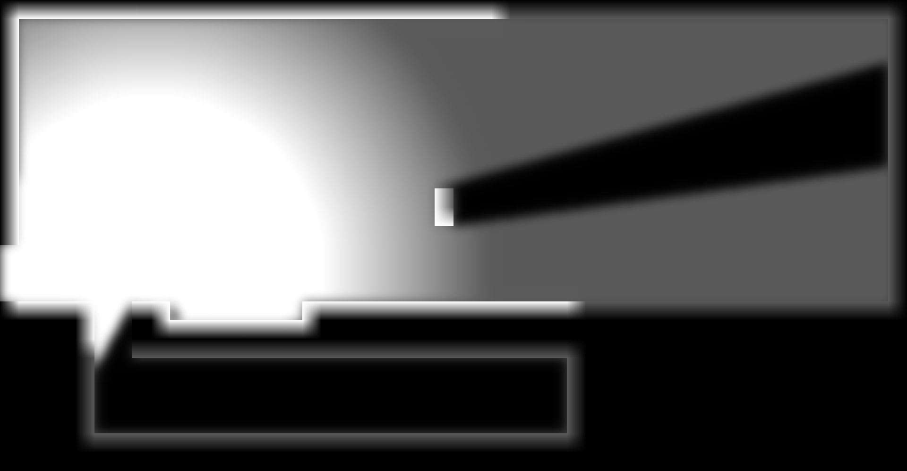
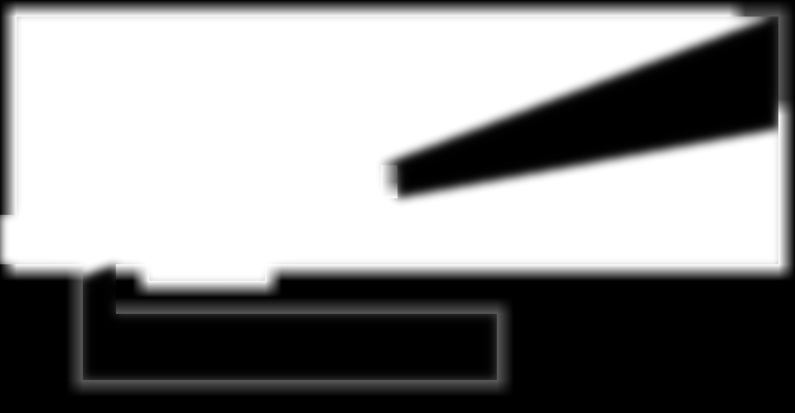
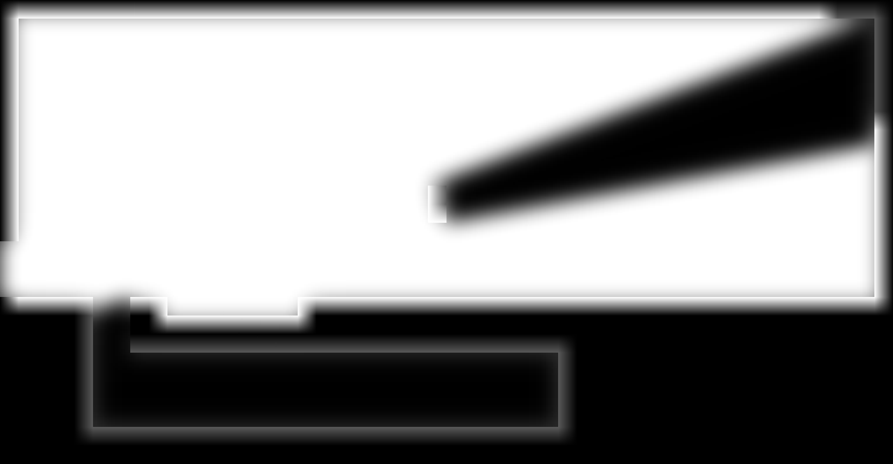
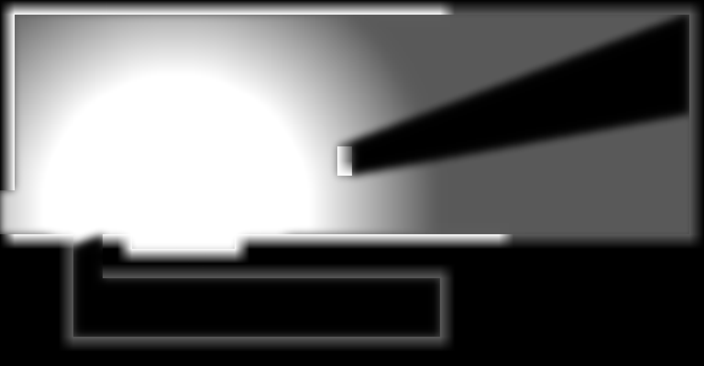

白色表示无遮挡，黑色表示阴影。下图是独立测试的雾层，非玩家存档截图。8组默认与恢复默认的最终图均严格相同。
| 设置 | 范围 | 默认 |
|---|---|---|
| 已探索区域亮度 | 0—1 | 0.35（保留已有保存值） |
| 最大视距倍率 | 0.5—3 | 1 |
| 平滑阴影渐变宽度 | 0—60像素柔化尺度 | 20 |
| 仿原版额外柔化 | 0—40像素柔化尺度 | 0 |
倍率按房间默认视距计算，墙门仍遮挡；亮度和柔化不扩大探索或敌人可见性。原版模式、基地透传、原生亮度记录保持原规则。柔化尺度不是严格的10%—90%边界宽度。





